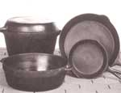

The phrase "like Grandma used to make" has become an advertising cliche'. But many folks do swear that dinner at their grandparents' house was (and is!) a special treat. And one of the reasons for that celebrated tastiness may be that your grandmother ruled the kitchen with an iron pan! Years ago, cast-iron cookware was generally considered the best available ... and many of today's great chefs, although they usually have a "mixed bag" of cooking utensils and pans, still agree that cast-iron ware is, in a number of ways, second to none.
The foremost virtue of cast-iron cookware may be its durability. It lasts! Many a skillet and dutch oven has been tended with loving care by one generation of cooks after another. Furthermore, cast iron is an efficient heat conductor, and thus saves time and energy in the kitchen. And it's even healthful: Why, just one meal a day prepared in these fine black pans will provide your body with all of the iron it needs.
Unfortunately, there are disadvantages to this traditional cookware, as well. For one thing, it's heavy ... and likely to be difficult for certain folks to lift, especially those individuals with arthritis or fragile hands and wrists. Then too, if you're the type of cook who piles dirty pots and pans in the sink while you dine, or if washing dishes always seems to be at the bottom of your priorities list, cast-iron cookware probably isn't for you. In order to keep the pots in top condition, you see, you must rinse them out with hot water and a sponge as soon as they are cool enough to be touched. If you feel that taking several minutes every week or two to coat your cookware with oil would be an unreasonable bother, you'd most likely be better off buying modern nonstick pans instead (but expect them to serve only as dog dishes 20 years from now).
If you'd like to start a family kitchen legacy, however, cast iron is an excellent choice. And, as for the care that's involved, good tools or furnishings of any kind require at least a bit of help if they're to remain in top condition. Your fine, old black kettle can be no less an heirloom than a well-made lamp or chair ... and it can be used and appreciated for many years to come.
Perhaps the best way to obtain your first castiron skillet or griddle is to turn to your own family. Just pass the word along the grapevine that you'd love to have an old iron pot or pan, and you may well find that a favorite aunt would be delighted to give you one she no longer needs.
Then again, most department stores carry cast iron, but often at greatly inflated prices. So if you plan to purchase the cookware, you might do better if you check out hardware stores, camping supply outlets, and mail-order companies. But since-as a general rule-the older the pan, the better the quality, used ironware may be your best choice. Estate sales, yard sales, and flea markets are possible sources ... but be careful: Such outlets rarely offer a guarantee of any kind, so it'll be up to you to be sure you're buying a quality product.
A good cast-iron utensil is heavy and is made all in one piece. The bottom and sides should meet smoothly, without a welded seam, and curve into one another.
Now what about the design? Handles and lid knobs should be made of iron rather than wood. Although wooden handles are decorative and won't get as hot as will their metal counterparts, they aren't ovenproof or indestructible. After all, there are many dishes that can be prepared in advance on top of the stove ... and if your cookware is totally cast iron, you can use the same pan for reheating (either in a slow oven or on the hearth).
New ironware will be coated inside and out with a protective oily substance, and will feel sticky to the touch. Old utensils, on the other hand, should be black inside and out. If the inner surfaces are smooth, with a slight dry sheen, you'll know the pan has been well seasoned through frequent use and good care.
If you buy new pans, your first job will be to scrub them ... using a sponge and mild cleanser to remove the sticky coating. After rinsing and drying the ironware, slather a thick layer of unsalted vegetable shortening over the inner surfaces of each utensil, including the undersides of any lids. Then set the tops on the pans and bake them in a slow oven (250'F) for 1-1/2 hours, occasionally swabbing the grease around the interiors to keep them evenly coated. Let the pans cool, drain or wipe out any excess grease with a clean cloth, buff up a sheen, and the cookware should be ready to use!
To break in your ironware properly, it's best if you start out by using the pans for frying. (Perhaps you can prepare several batches of french fried potatoes or fried chicken.)
After preparing a meal, and as soon as the pans are cool enough to handle, they should be washed or wiped (many people use bread crusts or special cloths to wipe their pans rather than washing them every time). Don't ever use harsh abrasives or scrub down to the bare metal, as these methods will remove all the fine seasoning you've given to the surfaces. In fact, most of the time you'll be able simply to wash the cookware out with hot water and a sponge ... but if you do have to use a detergent, make sure it's mild, and use it sparingly. Now, to keep your ironware virtually rust-free, rinse each pan well and place it on a burner that's turned up fairly high (or on a hot woodstove), tilting the utensil back and forth to spread any remaining water and speed its evaporation. Then remove the pan from the heat, let it cool, and store it (a quick oil wipe might be welcome at this point). One word of caution, though: Never let your ironware sit on the burner for so long that the seasoning begins to smoke. An iron pan will dry satisfactorily even if there's a half-teaspoon or so of water left in the bottom when you take it off the stove ... since residual heat will easily evaporate that small amount.
Wash and dry pot lids in the same manner, being sure to check their seasoning often: Steam from cooking foods can remove the coating from a pan lid very quickly.
In fact, if you often cook with liquids, you can expect a rusty tinge to appear along the inner sides of your pans, while hard water will leave a whitish deposit. To correct the problem, wash your pot thoroughly, quickdry it on the stove, and then ... make a batch of popcorn! Use a bit more oil than usual, and let the corn pop. The explosive action will spatter hot oil all over the inside of the pan and lid, and the iron will soak it up greedily. As soon as the pot is cool, just wipe out the excess oil and snippets of hull with a damp sponge and?voild!?your water-marked utensil will be seasoned again. (To keep the ironware in peak condition, however, it's best to reseason it at least once a year, using the vegetable shortening method.)
Cast-iron cookware is durable, versatile, and healthful. With just a little loving care, it will continue to serve your family for years to come ... and who knows, with a bit of help from those heavy pots and pans, your cooking might become a standard of excellence for future generations!
|
|
 |
|